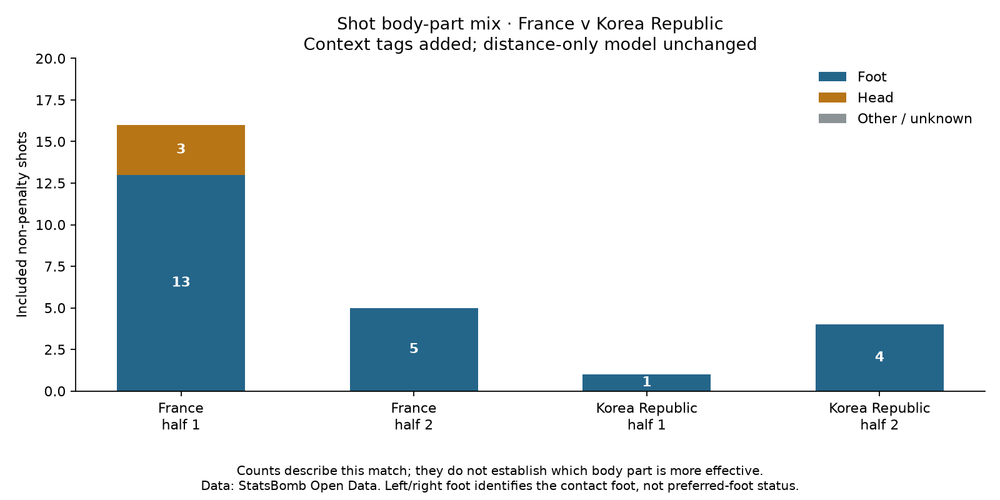

Football analyst training · Project lesson 33
Add football context without overstating it.
Shot locations are useful, but distance is not the whole situation. A header and a foot shot can have different scoring chances even from the same place.
1. What the data records
For each shot, StatsBomb records a body-part label such as Head, Left Foot or Right Foot. We joined these labels to our existing shots using their unique IDs.

2. A reporting tag is not a model feature
We added body part to the report, not to the prediction formula. Our frozen model still uses only distance. It therefore gives an equal-distance header and foot shot the same xG.
A future model could include body part as a feature, but we would need to fit and evaluate that new version carefully. Adding a column alone does not improve a model.
3. Avoid a tempting conclusion
Two of France's three headers became goals. That does not show headers are generally better than foot shots: there are only three headers, and the shooting situations differ. Also, headers are not automatically evidence of crosses; we must inspect the preceding actions.
4. Revisit your earlier foot question
We do have Left Foot and Right Foot labels for these shots. But Left Foot does not mean weak foot. We need verified player preference information to make that distinction, and contact foot alone does not explain a failed attempt.
5. Run the extension
Open 33_shot_body_part_context.py in Spyder. category() combines explicit left/right-foot labels as Foot, keeps Head separate, and retains Other / unknown. Missing information is never silently assumed to mean Foot.
Write a short coach note describing the body-part mix and one thing it cannot establish. Ask your teacher to review it or explain the code.
Example note
“France's first-half shots included three headers, while all five second-half shots were with the foot. I would inspect the headers' preceding actions before suggesting a crossing pattern; these counts alone do not establish the cause of the half-to-half change.”